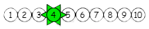

<ion-header>
  <ion-toolbar>
    <ion-menu-button color="primary" name="slide"fill="clear" size="large" slot="end" >
      <ion-icon name="cog"></ion-icon>
    </ion-menu-button>
    <ion-title style="text-align: center;"></ion-title>
    <ion-back-button color="primary" slot="start"></ion-back-button>
  </ion-toolbar>
</ion-header>
<ion-content> 


  <ion-card>
    <ion-card-header>
      <ion-card-subtitle>Quatrième arrêt</ion-card-subtitle>
    </ion-card-header>
  </ion-card>

  <ion-card>
    <ion-card-header>
      <ion-card-title>Enigme</ion-card-title>
    </ion-card-header>
  
    <ion-card-content>
      <ion-img src="../../../assets/img/enigme4.jpg" alt="enigme4"></ion-img>
      
    </ion-card-content>
  </ion-card>

  <ion-grid>  
    <ion-row>
      <ion-col size="4" size-lg offset="3">
        <ion-fab-button (click)="ouvrirPageIndice1()" expand="block"><ion-icon name="library-outline"></ion-icon>1</ion-fab-button>
      </ion-col>
      <ion-col size="4" size-lg>
        <ion-fab-button (click)="ouvrirPageIndice2()" expand="block"><ion-icon name="library-outline"></ion-icon>2</ion-fab-button>
      </ion-col>
    </ion-row>
  </ion-grid>
 
</ion-content>
<ion-footer> 
  <ion-toolbar>
    <ion-card>
      <ion-item>
        <ion-button (click)="notesPopover(click)" class="popover-content" expand="block" fill="clear"><ion-icon style="width: 20px; height: 20px;" name="create-outline"></ion-icon></ion-button>
        <ion-input type="text" [(ngModel)]="reponse" placeholder="réponse"></ion-input>
        <ion-button (click)="traitementReponse()" fill="solid" slot="end" color="success"><ion-icon name="checkmark"></ion-icon></ion-button>
      </ion-item>
    </ion-card>
  </ion-toolbar>
</ion-footer>